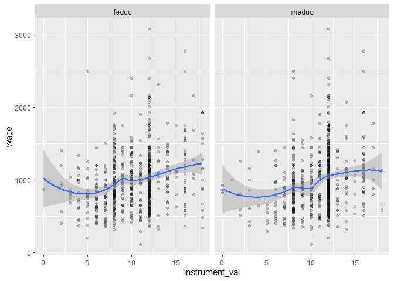
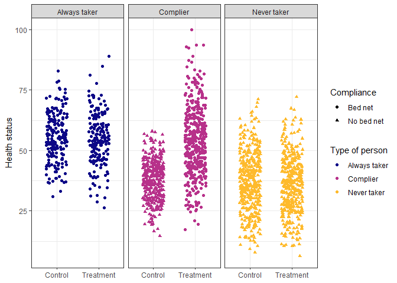
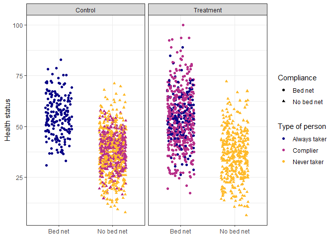

Practice 4: Instrumental Variables
wage <- fread("IV/wage2.csv")
ed_real <- na.omit(wage)
print(paste(c('Number of Rows:', 'Number of Columns:'), dim(ed_real)))## [1] "Number of Rows: 663" "Number of Columns: 17"head(ed_real)## wage hours IQ KWW educ exper tenure age married black south urban sibs brthord meduc feduc lwage
## 1: 769 40 93 35 12 11 2 31 1 0 0 1 1 2 8 8 6.645091
## 2: 825 40 108 46 14 11 9 33 1 0 0 1 1 2 14 14 6.715384
## 3: 650 40 96 32 12 13 7 32 1 0 0 1 4 3 12 12 6.476973
## 4: 562 40 74 27 11 14 5 34 1 0 0 1 10 6 6 11 6.331502
## 5: 600 40 91 24 10 13 0 30 0 0 0 1 1 2 8 8 6.396930
## 6: 1154 45 111 37 15 13 1 36 1 0 0 0 2 3 14 5 7.050990Check Instrument Validity
- Relevance: The instrument is correlated with the endogenous variable
- Exclusion: Instrument is correlated with the outcome only through the endogenous variable
- Exogeneity: The instrument is exogenous; in other words, it is NOT correlated with omitting variables
Relevance
ed_real_long <- melt(ed_real[, .(educ, feduc, meduc)],
id.vars = c('educ'), measure.vars = c('feduc', 'meduc'),
variable.name = 'instrument', value.name = 'instrument_val')
ed_real_long <- ed_real_long[, .(n_obs = .N)
, by = c('educ', 'instrument', 'instrument_val')]
ggplot(ed_real_long, aes(x=instrument_val, y = educ)) +
geom_point(aes(size=n_obs), alpha = 0.2) +
geom_smooth(aes(weight=n_obs), method = 'loess', formula = 'y ~ x') +
facet_wrap(vars(instrument))
model_check_instruments <- lm(educ ~ feduc + meduc, data = ed_real)
summary(model_check_instruments)##
## Call:
## lm(formula = educ ~ feduc + meduc, data = ed_real)
##
## Residuals:
## Min 1Q Median 3Q Max
## -4.2226 -1.5658 -0.4271 1.7373 5.7305
##
## Coefficients:
## Estimate Std. Error t value Pr(>|t|)
## (Intercept) 9.91329 0.31959 31.019 < 2e-16 ***
## feduc 0.21894 0.02889 7.578 1.19e-13 ***
## meduc 0.14017 0.03365 4.165 3.52e-05 ***
## ---
## Signif. codes: 0 '***' 0.001 '**' 0.01 '*' 0.05 '.' 0.1 ' ' 1
##
## Residual standard error: 1.997 on 660 degrees of freedom
## Multiple R-squared: 0.2015, Adjusted R-squared: 0.1991
## F-statistic: 83.29 on 2 and 660 DF, p-value: < 2.2e-16Exclusion
- Check the relationship between the instruments and the outcome, i.e., wages (we should see some relationship)
- Argue the relationship is built on the path through the endogenous variable, i.e., education
ed_real_long <- melt(ed_real[, .(wage, feduc, meduc)],
id.vars = c('wage'), measure.vars = c('feduc', 'meduc'),
variable.name = 'instrument', value.name = 'instrument_val')
ggplot(ed_real_long, aes(x=instrument_val, y = wage)) +
geom_point(alpha = 0.2) +
geom_smooth(method = 'loess', formula = 'y ~ x') +
facet_wrap(vars(instrument))
Exogeneity
There’s no statistical test for exogeneity.
Scott Cunningham’s argument
The reason I think this is because an instrument doesn’t belong in the structural error term and the structural error term is all the intuitive things that determine your outcome. So it must be weird, otherwise it’s probably in the error term.
2-Stage Least Squares (2SLS)
# Conduct 2SLS manually
first_stage <- lm(educ ~ feduc + meduc + hours + exper + tenure + age +
married + black + south + urban + sibs + brthord, data = ed_real)
ed_real_with_pred <- copy(ed_real)
ed_real_with_pred$educ_hat <- first_stage$fitted.values
second_stage <- lm(wage ~ educ_hat + hours + exper + tenure + age +
married + black + south + urban + sibs + brthord, data = ed_real_with_pred)
# Conduct 2SLS automatically
model_2sls <- estimatr::iv_robust(wage ~ educ + hours + exper + tenure + age +
married + black + south + urban + sibs + brthord |
feduc + meduc + hours + exper + tenure + age +
married + black + south + urban + sibs + brthord,
data = ed_real, diagnostics = TRUE)Summary
##
## ============================================================
## Naive OLS 2SLS (Manual) 2SLS (Auto)
## ------------------------------------------------------------
## (Intercept) -393.56 -1064.47 *** -1064.47 *
## (200.61) (302.54) [-1680.71; -448.23]
## educ 61.38 *** 127.86 *
## (7.66) [ 83.31; 172.40]
## educ_hat 127.86 ***
## (23.35)
## ------------------------------------------------------------
## Controls YES YES YES
## R^2 0.23 0.19 0.14
## Adj. R^2 0.22 0.18 0.13
## Num. obs. 663 663 663
## RMSE 379.48
## ============================================================
## *** p < 0.001; ** p < 0.01; * p < 0.05 (or Null hypothesis value outside the confidence interval).summary(model_2sls)##
## Call:
## estimatr::iv_robust(formula = wage ~ educ + hours + exper + tenure +
## age + married + black + south + urban + sibs + brthord |
## feduc + meduc + hours + exper + tenure + age + married +
## black + south + urban + sibs + brthord, data = ed_real,
## diagnostics = TRUE)
##
## Standard error type: HC2
##
## Coefficients:
## Estimate Std. Error t value Pr(>|t|) CI Lower CI Upper DF
## (Intercept) -1064.471 313.829 -3.3919 7.362e-04 -1680.709 -448.232 651
## educ 127.858 22.686 5.6360 2.594e-08 83.311 172.404 651
## hours -4.416 2.780 -1.5885 1.127e-01 -9.875 1.043 651
## exper 30.677 8.439 3.6352 2.997e-04 14.106 47.248 651
## tenure 1.976 3.103 0.6366 5.246e-01 -4.118 8.069 651
## age -4.171 8.052 -0.5180 6.046e-01 -19.982 11.640 651
## married 195.132 47.632 4.0967 4.720e-05 101.602 288.663 651
## black -148.117 47.498 -3.1184 1.898e-03 -241.385 -54.850 651
## south -32.697 33.067 -0.9888 3.231e-01 -97.627 32.233 651
## urban 167.666 31.920 5.2527 2.033e-07 104.988 230.345 651
## sibs 12.351 8.757 1.4104 1.589e-01 -4.845 29.547 651
## brthord -16.887 11.608 -1.4547 1.462e-01 -39.681 5.907 651
##
## Multiple R-squared: 0.143 , Adjusted R-squared: 0.1286
## F-statistic: 16.88 on 11 and 651 DF, p-value: < 2.2e-16
##
## Diagnostics:
## numdf dendf value p.value
## Weak instruments 2 650 42.896 < 2e-16 ***
## Wu-Hausman 1 650 11.659 0.000679 ***
## Overidentifying 1 NA 0.104 0.747148
## ---
## Signif. codes: 0 '***' 0.001 '**' 0.01 '*' 0.05 '.' 0.1 ' ' 1Notes: A test of overidentifying restrictions regresses the residuals \(u\) from an IV or 2SLS regression on all instruments in \(z\). Under the null hypothesis, all instruments are uncorrelated with \(u\).
The test of overidentifying restrictions should be performed routinely in any overidentified model estimated with instrumental variables techniques. Instrumental variables techniques are powerful, but if a strong rejection of the null hypothesis is encountered, you should strongly doubt the validity of the estimates.
Practice 5: Complier Average Treatment Effects
We can calculate conditional average treatment effect (CATE) by averaging the treatment effect of a program over some segment of the population.
One important type of CATE is the effect of a program on just those who comply with the program. This is the complier average treatment effect, but the acronym would be the same as the conditional average treatment effect, so we call it the complier average causal effect (CACE), also known as the local average treatment effect (LATE).
We can split the population into four types of people:
- Compliers: People who follow whatever their assignment is
- Always takers: People who will receive or seek out the treatment regardless of assignment
- Never takers: People who will NOT receive or seek out the treatment regardless of assignment
- Defiers: People who will do the opposite of whatever their assignment is
For simplicity, we assume that defiers don’t exist based on the idea of monotonicity, which means that the effect of being assigned to treatment only increases the likelihood of participating in the program rather than decreases.
bed_nets_time_machine <- fread("ITT&CACE/bed_nets_time_machine.csv")Ideally, we can identify different types of people from the data.

However, we can tell some of the always takers from the control group (those who used bed nets after being assigned to the control group) and some of the never takers from the treatment group (those who did not use a bed net after being assigned to the treatment group), but compliers are mixed up with the always and never takers.

Intent to Treat (ITT)
We can calculate ITT by assuming the proportion of compliers (c), never takers (n), and always takers (a) are equally spread across treatment and control. This assumption is plausible in a randomized control trial.
\[ \begin{align*}~ \text{ITT}\space=\space& \sum_{k\in\\{c,n,a\\}}\pi_k\times(\text{T}-\text{C})_k \end{align*} \]
Suppose treatment doesn’t make someone more likely to be an always taker or a never taker, we have \(\text{ATACE}=0\) and \(\text{NTACE}=0\). Hence,
\[ \text{ITT}=\pi_c\text{CACE} \implies \text{CACE} = \frac{\text{ITT}}{\pi_c} \]
Finding ITT Using regression
itt_model <- lm(health ~ treatment, data = bed_nets_time_machine)
summary(itt_model)$coeff %>%
(function(x) round(x, 4))## Estimate Std. Error t value Pr(>|t|)
## (Intercept) 40.9381 0.4444 92.1143 0
## treatmentTreatment 5.9880 0.6298 9.5081 0CACE/LATE
Given$ $, we can calculate \(\text{CACE/LATE}\) by obtaining \(\pi_c\).
\[ \begin{align*}~ \pi_a+\pi_c &= \text{percent of yes in treatment} \\\\ \implies \pi_c&=\text{percent of yes in treatment} - \pi_a \\\\ &=\text{percent of yes in treatment} - \text{percent of yes in control} \end{align*} \]
table_net <- bed_nets_time_machine[, .N, by=c('treatment', 'bed_net')][
order(treatment, bed_net)]
table_net[, percent:=round(N/sum(N), 4), by='treatment']
table_net## treatment bed_net N percent
## 1: Control Bed net 196 0.1952
## 2: Control No bed net 808 0.8048
## 3: Treatment Bed net 608 0.6104
## 4: Treatment No bed net 388 0.3896cACE <- itt_model$coef["treatmentTreatment"] /
(table_net[treatment == 'Treatment' & bed_net == 'Bed net']$percent -
table_net[treatment == 'Control' & bed_net == 'Bed net']$percent)
names(cACE) <- "CACE"
round(cACE, 2)## CACE
## 14.42IV Regression
model_2sls <- estimatr::iv_robust(health ~ as.factor(bed_net) | as.factor(treatment),
data = bed_nets_time_machine)
round(summary(model_2sls)$coef, 2)## Estimate Std. Error t value Pr(>|t|) CI Lower
## (Intercept) 52.54 0.84 62.2 0 50.89
## as.factor(bed_net)No bed net -14.42 1.25 -11.5 0 -16.88
## CI Upper DF
## (Intercept) 54.20 1998
## as.factor(bed_net)No bed net -11.96 1998